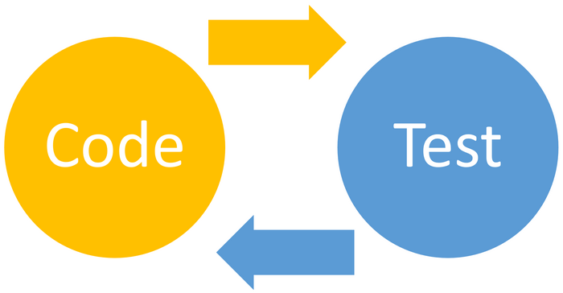
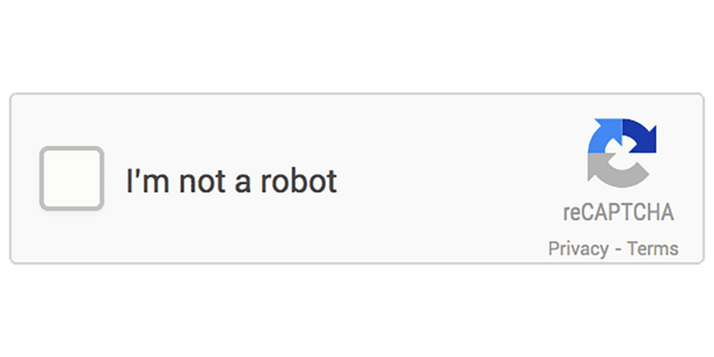

How do you design programs that handle unexpected inputs — and how do you verify they actually work?
Robust programs anticipate misuse. A user will enter text where a number was expected, leave fields blank, type a negative value for age, or try to log in with someone else's credentials. Defensive design builds in checks before these inputs can cause harm — input validation rejects data that doesn't meet the rules; authentication verifies the user is who they claim to be. These are programming decisions made at design time, not patches added later.
Testing verifies that a program actually does what it is supposed to. OCR's distinction between normal (valid), boundary (at the edge of valid), invalid (correct type but outside range), and erroneous (wrong type entirely) test data is a key discriminator in the exam. A test table shows input → expected output → actual output → pass/fail. Iterative testing happens throughout development; final/terminal testing happens at the end. The difference between a syntax error (the code doesn't run) and a logic error (the code runs but gives the wrong answer) maps directly to different types of testing tool.


Diagrams: PG Online (Paul Long), OCR J277 textbook. Used under the school site licence.